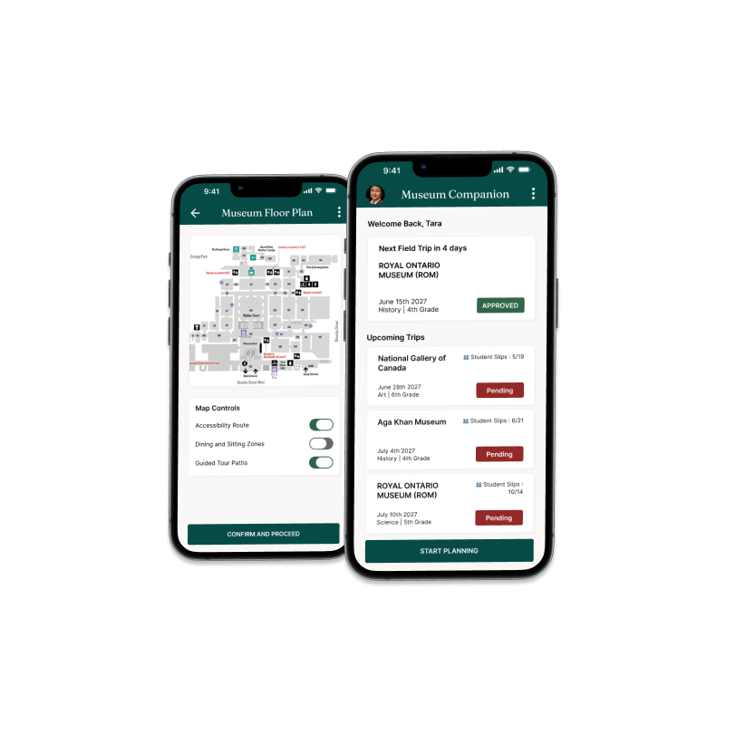
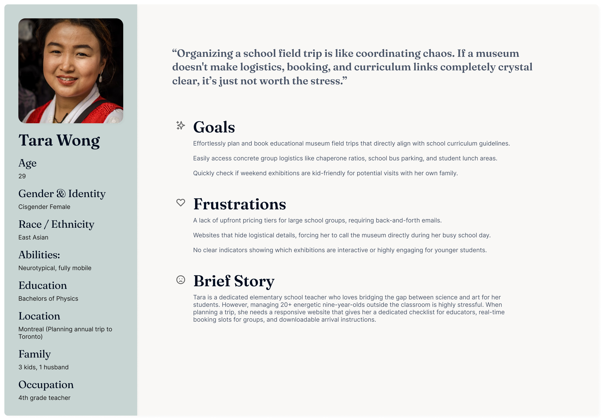
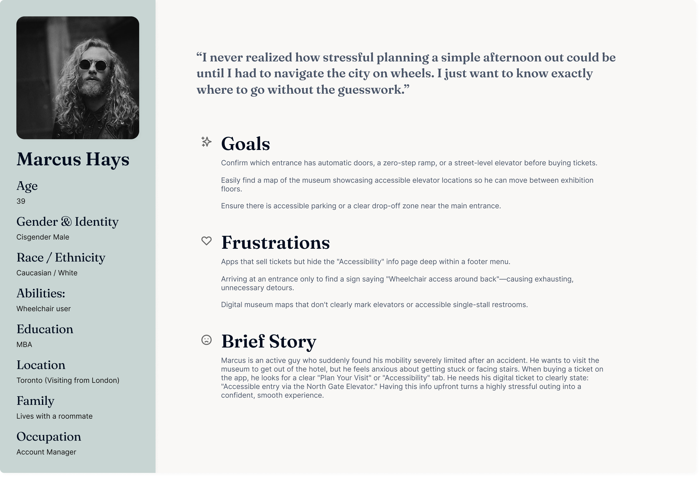
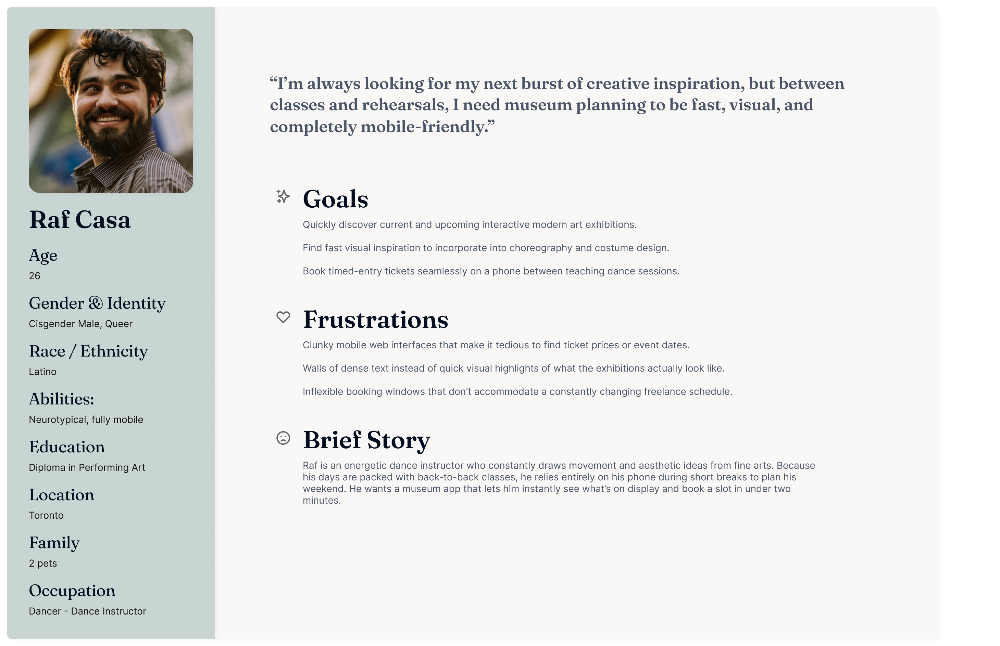
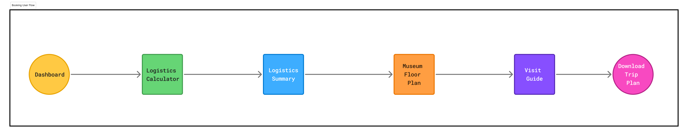
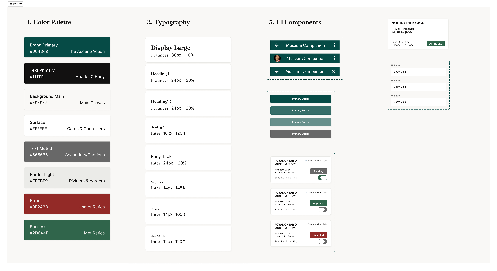

The Museum Companion
Interactive Museum App

Project Overview
The Museum Planning Companion is a digital tool designed to bridge the gap between educational goals and logistical reality. By providing a centralized planning space, it transforms the field trip experience for educators, allowing them to focus on learning rather than logistics.
The Problem
Tara, an elementary school teacher managing groups of 20+ students, struggles to maintain group safety and cohesion because she lacks a centralized tool to calculate required chaperone-to-student ratios and obtain a clear, accessibility-aware guide for movement, dining, and seating within the museum.
Competitive Analysis
To understand where existing tools fall short for educators like Tara, I audited two direct competitors — the Royal Ontario Museum (ROM) and the Art Gallery of Ontario (AGO) — alongside one indirect competitor, Tiqets, a mobile-first ticketing platform.
ROM and AGO offer strong institutional content and are trusted cultural authorities, but both rely on legacy booking flows that push group organizers into manual phone or email coordination, and treat accessibility as a static PDF rather than an interactive feature. Tiqets, by contrast, delivers a fast, mobile-optimized checkout experience — but it's built for individual travelers, with no support for group-specific needs like chaperone ratios or curriculum planning.
Key Differentiators
- Institutional authority vs. transactional speed — neither model addresses logistics-heavy group planning
- Static, document-based accessibility info vs. no accessibility support at all
- Deep cultural content vs. streamlined booking — no competitor offers both
This revealed two clear gaps: a Logistical Context Gap — no platform bridges cultural content with real group-logistics needs — and an Accessibility-as-a-Feature Gap — accessibility info is currently a downloadable document rather than a living part of the planning experience.
These gaps directly shaped my goal: build a planning companion that pairs curriculum-linked content with real-time, accessibility-aware logistics, measured by reduced time spent on booking tasks and increased educator confidence around accessibility needs.
Meet the Users



User Group Comparison
| Feature | The Local (Raf) | The Group Planner (Tara) | The Accessibility Visitor (Marcus) |
|---|---|---|---|
| Primary Goal | Speed Discovery | Logistical Clarity | Predictability & Safety |
| Pain Point | Clunky Interfaces | Hidden Info | Unclear Navigation |
| Context | On-the-go / Casual | Planned Professional | Anxious / Navigational |
| Top Feature | Quick-Book / Trends | Group Checklist | Accessibility Map |
| Success Metric | Time-to-book < 2 mins | First-call resolution | Successful navigation to door |
Task Analysis: Tara's Journey
To bridge the gap between user needs and product design, I mapped Tara’s end-to-end journey across five key stages. This highlights user tasks, emotional friction points, and opportunities for systemic design improvements.
| Stage | 1. Research | 2. Initial Booking | 3. Logistic Sync | 4. Trip Day Arrival | 5. Post-Trip Reflection |
|---|---|---|---|---|---|
| Task List |
|
|
|
|
|
| Feeling Adjective | Optimistic | Frustrated | Overwhelmed | Anxious / Rushed | Relieved / Tired |
| Improvement Opportunities | Clear curriculum tagging system. | Transparent, online tier-pricing. | Integrated logistical checklist. | Digital Group QR check-in & Wayfinding. | Automated receipting & Resource packs. |
Big Picture Storyboard
The following storyboard illustrates Tara’s journey from the frustration of manual, disorganized coordination to the confidence of a prepared, data-driven visit. It visualizes how the app acts as a bridge, allowing her to focus less on administration and more on the learning experience.

Close-Up Storyboard
The Close-Up storyboard details the specific product interactions Tara uses to achieve her goal. This walkthrough highlights the flow of actions within the museum app.

User Flow
To establish a logical progression for the educator's booking experience, I mapped out the core task flow. This flow guides the user from their initial dashboard landing to checking logistics constraints, and finally generating an accessibility-aware museum floor plan and visit guide.

Core task flow diagram mapping the dashboard, logistics calculator, summary, and interactive floor plan pages.
Prototype
This prototype demonstrates the "Universal Design with Dynamic Defaults" approach. By remembering Tara's accessibility needs from the calculator step, the system dynamically adapts the floor plan to highlight necessary routes, dining, and seating areas automatically.

Iteration 0: The Functional MVP Blueprint
Established core user flows for logistics calculation and floor plan generation to prioritize rapid task completion for educators.

Systems Optimization & Defensive Design
I designed for dynamic backend data rather than static screens. Reviewing the initial iteration revealed production vulnerabilities that necessitated structural layout overhauls.

Phase 0 • MVP

Phase 1 • Patch
The Text-Wrap Fix

Phase 2 • Layout
The Linear Timeline

Phase 3 • System
Logic-Filtered Data
System Validation & Usability Testing
Validated interface architecture through targeted usability studies, focusing on task execution velocity and cognitive load reduction for high-stakes logistics management.
The Testing Methodology
I benchmarked the interactive prototype against a core user scenario: "As an educator, log in, verify the approval status of your upcoming trip, calculate the mandatory chaperone-to-student ratio for 25 youth, and export an accessible route map."
P0 - CRITICAL FRAMEWORK
Insight 1: Logic-Filtered Clarity
The Data: 100% of participants successfully identified the status of the immediate upcoming trip within 2.5 seconds of dashboard landing.
The Impact: Our first layout clumped all historical and upcoming field trips together, causing teachers to accidentally click past events. In our final revision, we built an automated sorting filter that pins the current week's trip to the very top of the screen. This small logic adjustment dropped user identification time down to 2.5 seconds.
P1 - USER EXPERIENCE ITERATION
Insight 2: Operational Data Validation
The Data: Educators noted that the "Student Slips" ratio was the most critical administrative metric on the screen.
The Impact: During testing, users requested an immediate action trigger directly from the card state. This behavioral insight justifies a future iteration: introducing a "Send Reminder Ping" micro-action toggle directly inside the pending trip component to close the administrative loop faster.
P0 - SYSTEM COMPLIANCE REGULATION
Insight 3: Form Input Optimization
The Data: The "Dynamic Defaults" system reduced form calculation errors to 0%.
The Impact: School boards enforce strict legal limits on chaperone-to-student ratios, but teachers often lose time hunting through school PDF handbooks to find the rules. We removed this math burden entirely by building standard board policy constants directly into the input fields as automatic defaults. If a user enters '25 students,' the input engine automatically dictates the exact number of required adult supervisors, entirely preventing compliance submission rejections before finalization.
Design Readiness & Compliance
| Quality Assurance Criteria | System Resolution | Status |
|---|---|---|
| Data Asset Finalization | All wireframe placeholders, generic icons, and clipped server strings replaced with high-density production assets. | ✓ PASSED |
| Platform Design Patterns | Adheres directly to mobile human interface standards using bottom-anchored thumb-zone action keys and clear navigation hierarchy. | ✓ PASSED |
| Defensive Error Boundaries | Logistics engine runs automatic server-side calculation checks to block compliance progression if legal chaperone ratios fail. | ✓ PASSED |
| Inclusive Accessibility | Features direct dynamic toggle layers to adjust map views for physical mobility accommodations, dining spacing, and low-stress navigation. | ✓ PASSED |
Design System
To establish a consistent, accessible, and structured visual identity, I developed a modular Design System for the Museum Companion. The system is built around a calm, nature-inspired matcha green primary color and high-contrast charcoal elements to comply with WCAG AA readability standards. Below is a snapshot of our core colors, typography scaling, and reusable UI components.

Inclusive Design & Accessibility
To ensure Museum Companion supports all educators, I integrated accessibility considerations at both the functional and visual levels:
Functional Accessibility: I prioritized the inclusion of physical accessibility features directly into the navigation flow. The Map Controls feature a toggle for "Accessibility Route," and the Logistics Calculator includes an "Accessibility Accommodations" toggle, ensuring special requirements are captured as a core part of the trip planning process.
Visual & Cognitive Hierarchy: I utilized a high-contrast color palette—pairing deep green text against light, neutral backgrounds—to meet WCAG guidelines. Furthermore, the structured, card-based layout creates a clear visual hierarchy that minimizes cognitive load, allowing educators to scan information and complete tasks efficiently without feeling overwhelmed by data.
Takeaways
Designing the Museum Companion highlighted the vital importance of defensive, systems-oriented product design. Working under real-world logistical constraints showed me that an elegant interface is only as good as the system logic supporting it. Building error boundaries for field trip calculations and thinking through dynamic text layouts made me a more detail-oriented designer.
If I were to approach this project again, I would dedicate more time to interviewing museum administrators alongside educators. Gaining a clearer view of their backend approval workflows earlier would have helped streamline the trip verification status step even further.